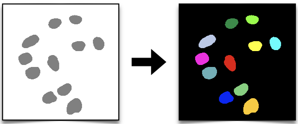

Form Ilastik Masks to Labels#
# /// script
# requires-python = ">=3.12"
# dependencies = [
# "matplotlib",
# "ndv[jupyter,vispy]",
# "scikit-image",
# "scipy",
# "tifffile",
# "imagecodecs",
# ]
# ///
Description
#This notebook demonstrates how to convert the semantic segmentation generated by Ilastik (Simple Segmentation) into instance segmentation.

We first explore the type of data that we generated with Ilastik in the previous section (Machine Learning: Ilastik) and we then use them to generate labels, which can be used for instance segmentation (as we did in classic segmentastion methods).
TODO: UPDATE LINK TO CLASSIC SEGMENTATION METHODS SECTION
Import libraries
#import tifffile
import ndv
from scipy import ndimage
from skimage import measure, segmentation, morphology, color
import matplotlib.pyplot as plt
from pathlib import Path
import numpy as np
Explore the Data
#Let’s first load one of the _Simple Segmentation.tif files and explore the data that we generated with Ilastik. We want to know the type of data that we have before we can convert it to labels (instance segmentation).
Choose one of the _Simple Segmentation.tif files path and store it in a variable called seg_path.
# set the path to one of the *_Simple Segmentation.tif files
seg_path = "../../../_static/images/ilastik/ilastik_simple_seg_example.tif"
We can use the tifffile library to read the tif file.
# Load a mask
seg = tifffile.imread(seg_path)
---------------------------------------------------------------------------
ValueError Traceback (most recent call last)
/tmp/ipykernel_3230/565119598.py in ?()
1 # Load a mask
----> 2 seg = tifffile.imread(seg_path)
~/.local/lib/python3.12/site-packages/tifffile/tifffile.py in ?(files, selection, aszarr, key, series, level, squeeze, maxworkers, buffersize, mode, name, offset, size, pattern, axesorder, categories, imread, imreadargs, sort, container, chunkshape, chunkdtype, axestiled, ioworkers, chunkmode, fillvalue, zattrs, multiscales, omexml, out, out_inplace, _multifile, _useframes, **kwargs)
1234
1235 from .zarr import zarr_selection
1236
1237 return zarr_selection(store, selection, out=out)
-> 1238 return tif.asarray(
1239 key=key,
1240 series=series,
1241 level=level,
~/.local/lib/python3.12/site-packages/tifffile/tifffile.py in ?(self, key, series, level, squeeze, out, maxworkers, buffersize)
4538 elif len(pages) == 1:
4539 page0 = pages[0]
4540 if page0 is None:
4541 raise ValueError('page is None')
-> 4542 result = page0.asarray(
4543 out=out, maxworkers=maxworkers, buffersize=buffersize
4544 )
4545 else:
~/.local/lib/python3.12/site-packages/tifffile/tifffile.py in ?(self, out, squeeze, lock, maxworkers, buffersize)
8881 ]
8882 # except IndexError:
8883 # pass # corrupted file, for example, with too many strips
8884
-> 8885 for _ in self.segments(
8886 func=func,
8887 lock=lock,
8888 maxworkers=maxworkers,
~/.local/lib/python3.12/site-packages/tifffile/tifffile.py in ?(self, lock, maxworkers, func, sort, buffersize, _fullsize)
8681 sort=sort,
8682 buffersize=buffersize,
8683 flat=True,
8684 ):
-> 8685 yield decode(segment)
8686 else:
8687 # reduce memory overhead by processing chunks of up to
8688 # buffersize of segments because ThreadPoolExecutor.map is not
~/.local/lib/python3.12/site-packages/tifffile/tifffile.py in ?(args, decodeargs, decode)
8671 def decode(args, decodeargs=decodeargs, decode=keyframe.decode):
-> 8672 return func(decode(*args, **decodeargs))
~/.local/lib/python3.12/site-packages/tifffile/tifffile.py in ?(exc, *args, **kwargs)
8093 def decode_raise_compression(*args, exc=str(exc)[1:-1], **kwargs):
-> 8094 raise ValueError(f'{exc}')
ValueError: <COMPRESSION.LZW: 5> requires the 'imagecodecs' package
What is the data type?
print(seg.dtype)
print(type(seg))
With can now use the ndv library to display the data and explore the pixel values.
What are the values? Is this a [0 1] binary mask?
# show the mask image
ndv.imshow(seg)
By exploring the results we can notice that all the pixels within the nuclei regions have a value of 1, while the background has a value of 2.
This is because Ilastik assigns integer to classes starting from 1, based on the number and the order of the classes defined during the training phase. For instance, in our case, we defined two classes: the first class corresponds to the nuclei, and the second class corresponds to the background. As a result, the nuclei are labeled with the value 1 and the background with the value 2.
Remember that in order to generate labels form the data, we need binary masks with pixel values of 0 for the background and 1 for our object of interest, the nuclei.
How can we convert them to binary?
Data to Binary Masks
## Convert to a binary mask
# The nuclei pixels have all value 1, the seg image is a numpy array.
# We can create a new bunary mask by keeping only the pixels with value 1.
binary_mask = seg == 1
If we explore the binary masks with ndv, we can now see that the background has a value of 0 and the nuclei have a value of 1.
ndv.imshow(binary_mask)
Binary Masks to Labels
#Now that we have the binary mask, we can convert it to labels (instance segmentation) as we did in the classic segmentastion methods section.
TODO: UPDATE LINK TO CLASSIC SEGMENTATION METHODS SECTION
# compute the distance transform
distance = ndimage.distance_transform_edt(binary_mask)
# apply a Gaussian filter to smooth the distance transform
blurred_distance = ndimage.gaussian_filter(distance, sigma=4)
# find local maxima in the blurred distance transform
local_maxima = morphology.local_maxima(blurred_distance)
# use the local maxima to create seeds for the watershed algorithm
seeds = measure.label(local_maxima)
# apply the watershed algorithm to segment the image and get labels
labels = segmentation.watershed(-blurred_distance, seeds, mask=binary_mask)
We can now plot the labels and check the results using scikit-image’s label2rgb function.
img = color.label2rgb(labels, bg_label=0)
fig, ax = plt.subplots(figsize=(10, 10))
ax.imshow(img, interpolation="nearest")
ax.axis("off")
plt.tight_layout()
plt.show()
We can also save the labels as a tif file using the tifffile library.
NOTE: The dtype of the labels image is important because will determine the maximum number of labels that can be stored in the image. Infact, in a label image, each object is assigned a unique integer label, and the dtype determines the range of integers that can be used for labeling.
For instance, if we use uint8, the maximum number of labels is 255, if we use uint16, the maximum number of labels is 65535 and so on.
tifffile.imwrite("watershed_segmentation.tif", labels.astype("uint16"))
Batch processing
#Since we now understand how to deal with the Simple Segmentation data from Ilastik, in order to obtain instance segmentation from all the _Simple Segmentation.tif files we generated, we can modify the batch script we used in the classic segmentation methods section by simply adding the line of code where we select only the pixels with a value of 1 to only consider the nuclei.
TODO: UPDATE LINK TO CLASSIC SEGMENTATION METHODS SECTION
✍️ Exercise: Batch Masks to Labels
#Write a script that will convert all the _Simple Segmentation.tif images generated by Ilastik into labels images (instance segmentation) and save them as tif files.
# make a function to create labels from a _Simple Segmentation.tif file
def ilastik_seg_to_labels(seg_image: np.ndarray, object_index: int) -> np.ndarray:
"""Convert an ilastik simpole segmentation image to labeled image.
Parameters
----------
seg_image : np.ndarray
The input segmentation image generated by ilastik.
object_index : int
The index of the object to segment (e.g. 1 if your objects have value 1).
"""
# convert to a binary mask
binary_mask = seg_image == object_index
# compute the distance transform
distance = ndimage.distance_transform_edt(binary_mask)
# apply a Gaussian filter to smooth the distance transform
blurred_distance = ndimage.gaussian_filter(distance, sigma=4)
# find local maxima in the blurred distance transform
local_maxima = morphology.local_maxima(blurred_distance)
# use the local maxima to create seeds for the watershed algorithm
seeds = measure.label(local_maxima)
# apply the watershed algorithm to segment the image and get labels
return segmentation.watershed(-blurred_distance, seeds, mask=binary_mask)
# set the input directory to the path of the _Simple Segmentation.tif files
input_dir = Path("my_input_directory")
# set the output directory to save the labels
output_dir = Path("my_output_directory")
for seg_file in input_dir.glob("*_Simple Segmentation.tif"):
seg_image = tifffile.imread(seg_file)
labels = ilastik_seg_to_labels(seg_image, object_index=1)
output_file = output_dir / f"{seg_file.stem}_labels.tif"
tifffile.imwrite(output_file, labels.astype("uint16"))
print("DONE!")
DONE!